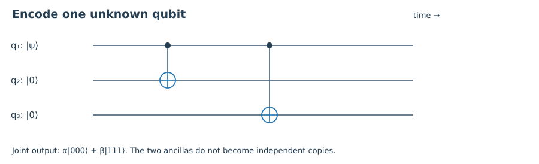
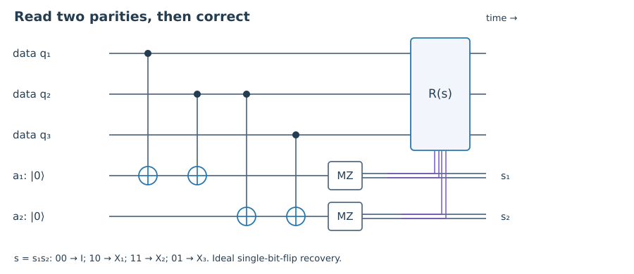

Starting point: Qubits, tensor products, measurements, and basic quantum circuits.
Anchor example: Encoding α|0⟩+β|1⟩ into α|000⟩+β|111⟩.
Method: Compare the information revealed by a measurement with the information that must remain private.
Watch for: An encoding distributes amplitudes; it does not make independent copies of a state.
This lesson includes explanations, worked examples, and problems with solutions. Advanced results whose proofs are outside the chapter are identified explicitly.
You have stored a qubit, but you do not know its state. Perhaps it is part of a computation whose answer you have not reached. Perhaps it is entangled with another system in a distant laboratory. During storage, an interaction with the environment may have changed it. How would you find out?
You could measure the qubit, but that replaces the problem with another one: the measurement may destroy the superposition you hoped to preserve. You could try keeping a spare copy, but an unknown quantum state cannot be copied at will. These are real obstacles. They do not, however, prove that protection is impossible. They tell us what a successful protection scheme must avoid.
1.1 Why a spare copy does not solve it
1.1.1 Encoding is different from cloning
Begin with a classical bit. If a memory sometimes flips a stored value, we can write it three times. Reading 001 strongly suggests that we wrote 000 and the third bit flipped. Reading all three copies does no additional damage to a classical message. The same words—“write it three times”—hide a difficulty for a quantum state \(|\psi\rangle=\alpha|0\rangle+\beta|1\rangle\).
Suppose a device clones the two basis states: it sends |0⟩|0⟩ to |0⟩|0⟩ and |1⟩|0⟩ to |1⟩|1⟩. Linearity fixes its action on a superposition. It must send \((\alpha|0\rangle+\beta|1\rangle)|0\rangle\) to \(\alpha|00\rangle+\beta|11\rangle\). But two independent copies would be \(\alpha^2|00\rangle+\alpha\beta|01\rangle+\alpha\beta|10\rangle+\beta^2|11\rangle\). These are generally different states. A device that copies basis labels does not clone arbitrary amplitudes.
Yet the first output is useful. It has moved the unknown amplitudes into a larger space without requiring us to know them. With two ancillas initialized to |0⟩, apply a CNOT from the input to each ancilla. In left-to-right register order,
The subscript L means logical: the three physical qubits together carry one qubit of information. The encoding is an isometry from a two-dimensional space into an eight-dimensional one. Nothing has been cloned. In fact, looking at any one physical qubit alone loses access to the relative phase between α and β. The information we care about lives in the joint state.
Reading circuits. Time runs from left to right. Each single horizontal line is a quantum register. A filled dot controls the gate joined to it by a vertical line; a circled plus is an X target. Boxes name gates, MZ measures in the computational basis, and double lines carry classical results. A crossing without a dot is not a connection.

Two CNOTs distribute the unknown amplitudes across three physical qubits. A filled dot is the control; a circled plus is the X target.
Worked check 1.1. Encode |+⟩ and compare the result with |+⟩⊗³.
Reasoned solution
The encoding gives (|000⟩+|111⟩)/√2, with only two nonzero computational amplitudes. Three independent |+⟩ states have eight amplitudes, each 1/√8. Measuring one encoded qubit in the computational basis collapses the joint superposition, so the encoding must not be read as three independently usable copies.
1.2 Learning an error without reading a message
1.2.1 Parity keeps the logical alternatives together
Suppose the second physical qubit flips. The state becomes \(\alpha|010\rangle+\beta|101\rangle\). We could measure all three physical bits, see either 010 or 101, and apply a majority rule. That would identify the classical pattern, but it would also reveal which logical basis component occurred. The amplitudes would no longer form the original superposition. We need a less revealing question.
Ask whether the first two bits agree, and whether the last two agree. The observables are \(Z_1Z_2\) and \(Z_2Z_3\). Their eigenvalue is +1 for agreement and −1 for disagreement. Both 000 and 111 give (+,+); both 010 and 101 give (−,−). A parity measurement therefore gives the same answer for both logical alternatives within a given error subspace.
Label +1 by syndrome bit 0 and −1 by syndrome bit 1. The four error possibilities produce
Two parity checks locate a single bit flip.
Error
Syndrome (Z₁Z₂, Z₂Z₃)
Recovery
I
00
I
X₁
10
X₁
X₂
11
X₂
X₃
01
X₃
For syndrome 11, applying X₂ sends both 010 and 101 back to their original codewords, preserving α and β. The measurement learned the error sector, not the logical value. The two parity observables commute, so they can be measured jointly. This matters: mutually incompatible checks could disturb one another instead of supplying a consistent error record.
The distinction is a property of the full measurement procedure. Merely calculating parity after measuring all three bits is too late; those measurements already exposed the logical value. In Chapter 6 we will construct a circuit that records only parity in an ancilla. For now, an ideal projective measurement of the two parity observables supplies the correct mathematical model.

The two ancillas record s₁ for Z₁Z₂ and s₂ for Z₂Z₃. The double classical wires select R(s): I for 00, X₁ for 10, X₂ for 11, or X₃ for 01. The data are never individually measured.
Worked check 1.2. After an X₁ error, does the probability of syndrome 10 depend on α or β?
Reasoned solution
No. Both |100⟩ and |011⟩ lie in the syndrome-10 eigenspace, so that syndrome occurs with probability |α|²+|β|²=1. The conditional logical amplitudes remain α and β; applying X₁ restores the encoded state.
1.3 What has actually been protected
1.3.1 A restricted error model and a stronger success test
Have we built a quantum memory that corrects every single-qubit error? Try Z₁. It sends the encoded state to \(\alpha|000\rangle-\beta|111\rangle\), yet both parity checks still report 00. A relative phase has changed without producing the disagreement we were looking for. This code protects against a specified family of bit flips, not arbitrary single-qubit noise.
Under independent bit flips with probability p on each physical qubit, ideal majority recovery succeeds on zero or one flip. Two flips imitate the syndrome of a single flip on the remaining position; recovery then applies the third flip and exchanges the logical codewords. Three flips also exchange them. Thus the resulting logical X-error probability is
\[p_L=3p^2(1-p)+p^3=3p^2-2p^3.\]
At p=0.1, this is 0.028. We have reduced one kind of error, assuming perfect encoding, checks, and recovery. Those operations will also fail in a real machine; we postpone that problem until we understand what ideal recovery must accomplish.
Even testing several input states is not the strongest way to state success. Let R be an inaccessible reference, and encode the system entangled with it. Exact recovery should preserve the entire joint state, not just the probabilities of logical zero and one. For example, it should restore \((|0\rangle_R|0_L\rangle+|1\rangle_R|1_L\rangle)/\sqrt2\). A procedure that measures the logical value and prepares a new codeword fails this test despite reproducing the correct computational-basis statistics.
The next chapter turns this requirement into an algebraic condition. Our small example has already told us what to look for: error records must be independent of the logical information, including its coherence with a reference.
Worked check 1.3. For p=0.01, compare the physical bit-flip probability with the logical one. What assumptions make the comparison meaningful?
Reasoned solution
The logical probability is 3(0.01)²−2(0.01)³=0.000298, below 0.01. This compares independent bit-flip noise followed by ideal recovery with one unencoded memory interval. It makes no claim about phase noise, gate faults, or the total cost of running a real correction cycle.
Summary
Encoding spreads one unknown state across a joint system; it does not clone it.
A syndrome must reveal the error sector without revealing the logical amplitudes.
State the error family and preserve reference correlations before calling a recovery successful.
Questions and worked problems
These exercises draw on the whole chapter. Attempt each question before opening a hint, explain your reasoning, then compare it with the worked solution.
What happens to a logical |+⟩ if all physical qubits are measured before re-encoding?
Hint 1
Keep track of the measurement record.
Worked solution
The pure encoded superposition becomes an equal classical mixture of |0_L⟩ and |1_L⟩ when outcomes are forgotten. Re-encoding cannot recover its lost phase or reference entanglement.
Does successful correction of |0_L⟩ and |1_L⟩ prove recovery for all inputs?
Hint 1
Test a superposition or a reference-entangled state.
Worked solution
No. A logical measurement followed by re-preparation succeeds on both basis states while destroying coherence. Recovery must preserve off-diagonal logical operators as well.
Use codewords |+++⟩ and |−−−⟩, checks X₁X₂ and X₂X₃, and Z corrections. Hadamard conjugation exchanges X and Z, so the earlier reasoning corrects single phase flips; it does not also correct all bit flips.